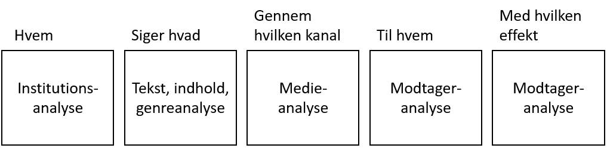

Vi havde tænkt os at ligge programmet på serveren så det var muligt at køre det web-baseret, men det gave os flere problemer, så vi besluttede kun at lave en download link. Vi prøvede med Glowscript, men da Glowscript er meget VPython orienteret, virkede det ikke, vi vil ikke kunne få de samme resultater.
Vi har i vores afsluttende opgave fået emnet ”Varmluftballon”. Hvorefter vi havde tre forskellige valgmuligheder: E-learning, Databehandling og præsentation eller En fortælling. Vi har valgt E-learning fordi, vi mener at det er mest relevant og for at kunne hjælpe de kommende første års elever. Det vi kom frem til, var at lave et Python program, som kunne beregne og hjælpe første års elever på HTX-Roskilde til at fremstille den bedste ballon. Da vi har en del erfaring i Python tænkte vi ikke sætter os i for store udfordringer i forhold til tiden. Som vi alle ved, er det ikke alle der er lige gode til matematik, og vi synes det skulle være lettere for ikke matematik retningerne og dem der i forvejen har lidt svært ved matematik kan få lidt hjælp.
Flere og flere unge mennesker bruger internettet meget mere end blyant og papir, En undersøgelse viser, at børn bruger syv timer og 26 minutter foran skærmen hver eneste dag, og omkring ni timer i weekenden og det tal vokser mere og mere. Skrive Politiken i 2012 (Kilde 1). Det resultere i at børn bliver bedre til at bruge elektroniske produkter så, som computere, som vi vil anvende i denne opgave.
Da vi ved at elektronik er fremtiden, vil vi bruge det til at hjælpe de kommende elever. Vi vil bruge vores viden til at videregive det.
Amerikaneren Harold Laswell udgave i 1948 og de følgende år sit svar på en kommunikationsmodel. Laswell’s modell viser hvad der sker med den ytring, som en person kommer med. Han vil med hans model fastslå 100% hvem der siger hvad igennem hvilket medie til hvem med hvilken effekt. Billedet under viser en Laswell’s teori, kasserne er lavet i PowerPoint og teksten er skrevet med Tekstfelt værktøjet, da vi selvfølge skal overholde ophavsretsloven. Det kunne også have været lavet i Gliffy Diagrams.
Hvis alle de fem ting er udfyldt eller opnået vil man kalde det en vellykket kommunikation. Hvis vi perspektivere den fra tankegang til virkelighed, en lærer der står og underviser elever, hvor eleverne ikke følger med, er ikke en vellykket kommunikation, da læreren ikke formår at videregive informationen til eleverne. Laswells model bliver også betegnet som kanylemodelle, som referer til en medicinsk kanalyse. Læge ”afsenderen” medicin ”tekst” kanylen ”kanal” i patienten ”modtageren”, så bliver patienten rask (Vellykket kommunikation). Kilde 2.
Gestalt er meget personligt, da det handler om hvordan vores sanser arbejder og, hvordan vi opfatter de ting vi ser. Det går også ud på perception og, hvordan den menneskelige hjerne opfatter figurer og omverdenen. Gestalt anvendes til at skabe stører overblik og fokus på de rigtige ting, de kan også hjælpe en del til brugervenligheden.

Billedet her er et meget normalt eksempel på, hvordan hjernen kan snyde os. På dette billede er den sorte vase meget tydelig, men efter at kigge på den i meget kort tid ser vi lige pludselig en overlæbe næse og mund. Meget kort efter kan vi se de to ansigter der er nær over for hinanden. Det er ikke sikkert ud opfatter billedet på samme måde, som vi gør, det kan variere i forhold til ”dit” miljø. Du har sikkert mange gange set disse former for billeder, hvor ting bevæger sig, eller som her hvor noget ligner to eller flere ting.
Hjernen registrerer og filtrer rigtig mange ting når vi surfer på internettet, og prøver og finde noget information. Derfor er det vigtigt at vi bruger gestalt-lovene, når man kreere en hjemmeside. Kilde 3-5.
Personas formål er at bruge information fra brugerne til at videreudvikle på et produkt, for at opnå det bedste resultat. Man starter med at spørge brugerne, med fx interviews, spørgeskemaer osv. Så finder man ud af om, personer har forskellige holdningerne og ud fra holdningerne inddele dem i grupper. Derefter finder man ud af om det excitere mindre grupper det også skal med, og om de vægter lige meget i ens produkt. Nu begynder man at spørge dem mere ind, ved anvendelse af (hv) ord. Og finder behov og holdninger til produktet. Nu finder man ud af, hvad alle personer ”mangler” gerne vil have at produktet skal kunne, når man er blevet enige om hvad der skal laves, informere man brugerne om situationen, om ændre produktet. Kilde 6 og 7.
Kolbs læringscyklus eller læringscirkel er en metode til at forstå forløbet, der ligger til grund for læring. David Kolb fra amerika har inddelt dentte forløb i fire faser: erfaring, eftertænksomhed, begrebsdannelse og eksperiment.
Uddybelse af de fire faser:
Kolb påstår, at man skal gennemgå hvert enkelt af disse fire stadier for at kunne komm til den næste. Kilde 8 og 9.
3 HTX elever skal lave et ballonprojekt, hvor de skal udregne ballonens dimensioner. For at være sikre på at de har regnet rigtig skal de bruge et program der udregner alle dimensionerne i ballonen, hvis programmet får nogle få informationer som input. Så de kan få lavet deres ballon.
Kravene er at programmet kan lave alle ballonens dimensioner, hvis den kun får de 4 givne informationer. Og programmet skal kunne fortælle hvilke dele af ballonen der har hvilke længder, og hvordan de ukendte længder udregnes.
Designet er blevet ret meget som vi planlagde, da planen var at det bare skulle være lavet i python, så derfor er designet bare pythons default design. Det vigtige i der her produkt er ikke rigtig designet men mere funktionen, vi har dog brugt tid på at designe studieweb, så den var mere indbydende og gav en positiv indstilling i henhold til farver og lys. Der er som sådan ikke et design over produktet – jo vi har prøvet at gøre det bruger venligt og få det til at se så godt ud som muligt når det bliver printet ud i en konsol, men gundet at det bliver printet i tekst form i en konsol er det svært at lavet noget design over det.
Produktet blev ”færdigt” ved version 0.8.1 og det har vi besluttet os for skal være udgivelses-kandidat versionen, eftersom alle koderne er skrevet færdigt og produktet virker som det skal, til gengæld kunne der godt finpudses her og der.

Umiddelbart har produktet levet op til vores forventninger, vi havde ikke regnet med at det ville være så relativt let at kode – men i sidste ende er det jo også bare matematik du skriver ind. Produktet blev i hvert fald til det som vi ville have det til, programmet fortæller både hvordan de forskellige ting bliver regnet ud (hvad for nogle formler etc) og giver et facit. Vi har opnået et produkt som har den virkning vi ønskede, altså vores problem var at vi skulle kunne finde ballonens dimensioner hurtigt og udregningerne bag det, og det kan vores produkt.


Som man kan se er koderne faktisk meget simple, programmet regner ALLE matematiske beregner ud først, ud fra de inputs programmet har fået af useren og printer bare resultatet samt noget string tekst bagefter.
Vi har prøvet at gøre det overskueligt at se resultatet ved at lave ting som mellemrum mellem hver ”afsnit” ved at bruge ”print ”””, altså bare lave et tomrum. Så har vi også i bunden i loopet, lavet det sådan at det ligner en tabel når det bliver printet ud, for der kommer omkring 20 resultater ud af det ene loop.
Det hele gik meget godt, vi gjorde vores bedste med at lave et produkt der er stabilt og fungerede, som det skulle. Noget af det sværeste var at kombinere matematiken og koden sammen, så det hele virkede ordenligt. Vi havde nogle problemer, hvor den helt store nødeknækker skulle frem, men det lykkedes. Det der var sværest, var klart også det der var mest interessant, dog ikke det sjoveste alle tider, men når det endelig lykkedes var det den bedste følelse. Hvis vi havde mere tid, vil vi godt have lavet et virtuelt billede af, hvordan den indtastede ballon vil se ud.
Vi har arbejdet godt, og brugt vores tid fornuftigt, vi havde lidt problem i starten da vi var i tvivl om hvilket produkt vi skulle lave, men da vi fandt ud af hvilket et vi ville lave, kom vi hurtigt i gang. Hvis vi kunne arbejde videre, ville vi nok lave et lidt mere overskueligt design til programmet og sådan nogle felter man kunne sætte vores informationer ind i, så det var lidt nemmere at finde rundt i.